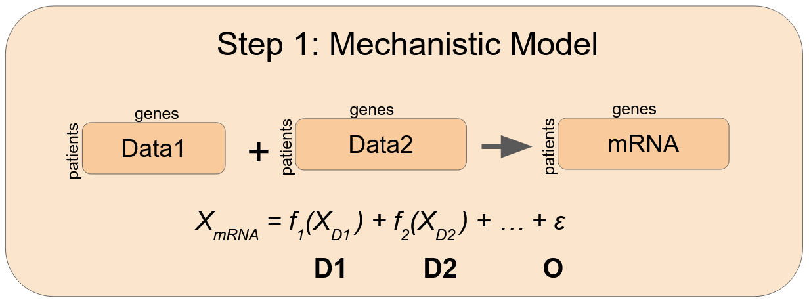

3 Linear iBAG
This module fits the linear iBAG models proposed in Wang et al, 2013 and Jennings et al, 2013. The model fitting and outputs are shown in the Figure below.
iBAG model fitting: iBAG uses a hierarchical procedure by breaking the modeling into two parts, a mechanistic component (Step 1) that clarifies the molecular behaviors, mechanisms and relationships between and within the different types of molecular platforms. Subsequently, a clinical component (Step 2) that utilizes this information to assess associations with patient-specific clinical outcomes and/or phenotypes that characterize disease development or progression (e.g. survival times).
iBAG Model Outputs:
Posterior Probability Plots: Probability plots of the regression coefficients.Gene Tables: Table of genes identified to have at least one significant marker by the above posterior probability plots.Mechanistic Model Fits: A heatmap of driver genes.
3.1 Mechanistic Model
The mechanistic model uses the downstream genomic information to model the mrna expression using a GAM fit.

Note: this model is fit independently across each gene.
We can theoretically use any technique for the \(f(\cdot)\) functions, but the linear iBAG makes use of Generalized Additive Models to fit the highly variable genomic data.
\[f(X) = \sum_{j=1}^{J} \beta_j b_j(X)\]
Where \(J\) is the optimal number of smoothing parameters which is determined by the GAM fit under minimised generalised cross-validation (GCV) score.
\(\beta_j\) is the smoothing coefficient estimates which are estimated through GCV as well.
\(b(\cdot)\) is the basis function, which in our implementation uses penalized regression splines.
Note: Our mechanistic model does not estimate an intercept & we must 0-mean the mrna expression per gene.
This allows us to come up with a simple expression for calculating Sum of Squares per upstream platform & come up with a formula for Variation Explained by platform.
\[SSTO = (E[Y]-Y)^2\] \[SS_{Di} = SSTO - (f(X_{Di})-Y)^2\] \[SSO = SSTO - \sum_{i=1}^{I}SS_{Di}\]